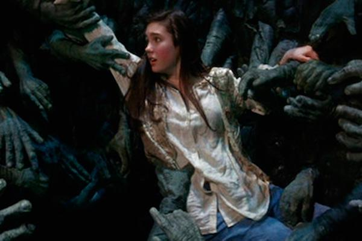
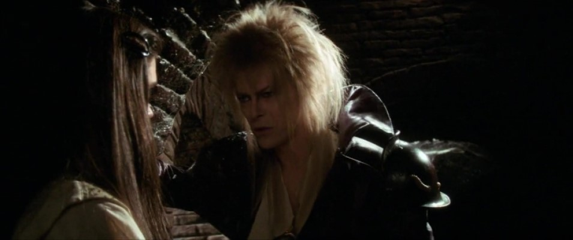

Decisión Final
Confiada, eliges la puerta derecha creyendo que llegarias al castillo y toda la pesadilla se acabaría al fin. Atraviesas la puerta y caes directamente en un pozo.
Cuando aterrizas sobre el suelo de piedra de una oscura y pequeña celda, te encuentras con Hoggle nuevamente, ya que fue enviado por Jareth para hacer que volvieras al inicio del laberinto y te olvidaras de Toby. Hoggle estaba sentado allí, en un banco basto, sujetando una antorcha en alto para que él y tu pudieran verse el uno al otro
Aparece Jareth para advertirte que Hoggle te está engañando y debes tomar una decisión: si seguir el camino que te indica Hoggle aún sabiendo que te puede traicionar o abandonar a Hoggle y seguir por cuenta propia.
¿Qué decides?
